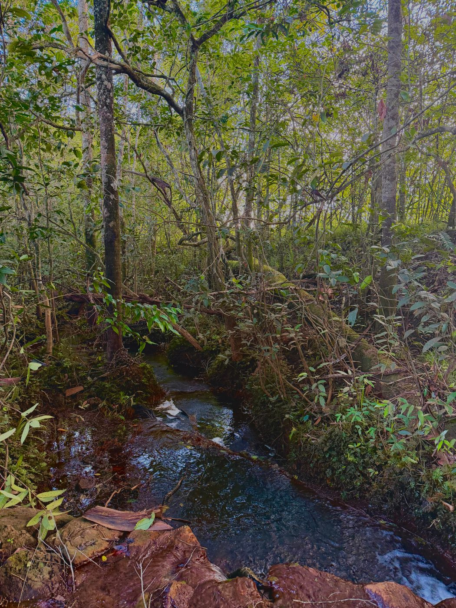
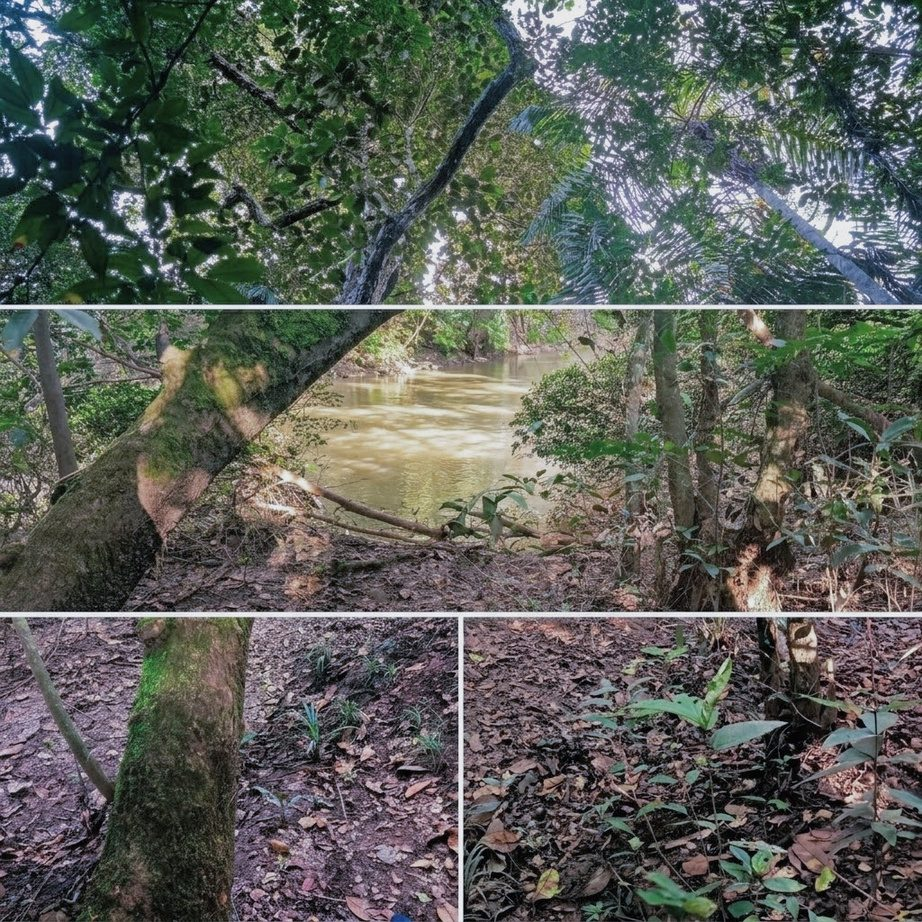
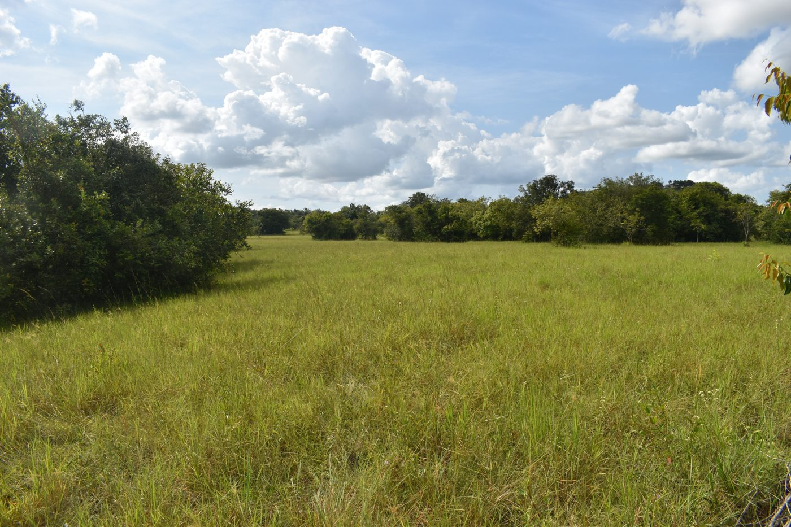
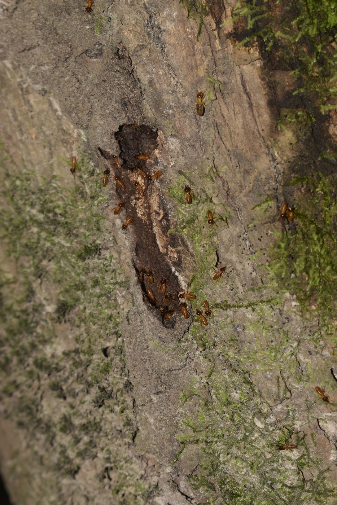
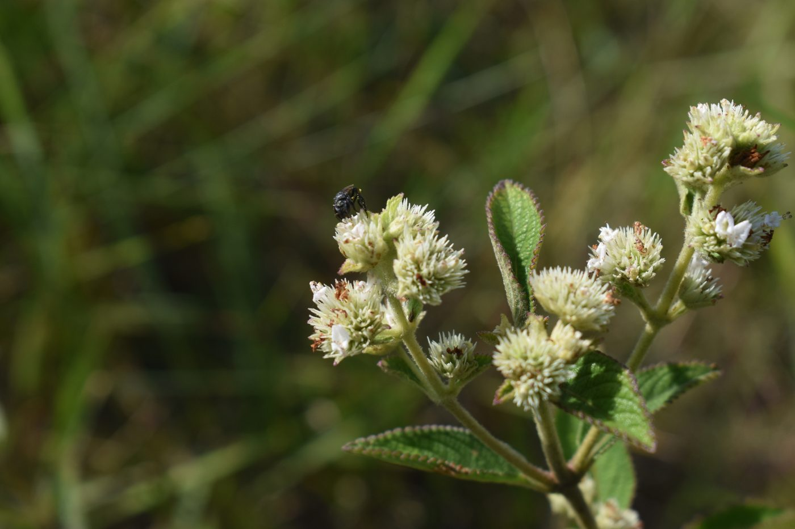
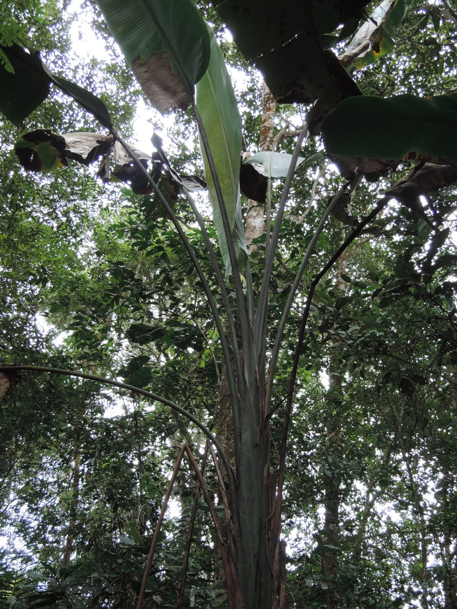

Fichas
Todas las especies y ecosistemas de Yurumí a la mano. Cada ficha indica en qué proyecto se estudió y trae su versión original en PDF.

Ficha de ecosistemaP-01
El refugio de la biodiversidad
Bosque de galería
Ver ficha →
Ficha de ecosistemaP-02 · P-06
Bosque de galería: trama de vida
Bosque de galería
Ver ficha →
Ficha de ecosistemaP-03
¡El pasto esconde todo un mundo!
Pastizal
Ver ficha →
Ficha de ecosistemaP-04 · P-05
El paraíso al final del arcoíris
Bosque de galería
Ver ficha →
Ficha de especieP-01
Hasta el ser más diminuto es extraordinariamente complejo
Termita · Nasutitermes corniger
Ver ficha →
Ficha de especieP-01
Termitas en su hogar: troncos en estado de descomposición
Termita · Nasutitermes corniger
Ver ficha →
Ficha de especieP-02
El musgo que le huye al río
Musgo · Octoblepharum sp.
Ver ficha →
Ficha de especieP-03
Una pequeña visitante muy trabajadora
Abeja · Trigona spinipes
Ver ficha →
Ficha de especieP-03
Una flor que destaca entre las demás
Planta con flor · Desmocelis villosa
Ver ficha →
Ficha de especieP-04
El peso de una nueva generación
Araña lobo · Lycosidae
Ver ficha →
Ficha de especieP-05
Hojas bajo la lupa
Oruga medidora · Geometridae
Ver ficha →
Ficha de especieP-06
El platanillo como recurso alimenticio
Mono maicero · Sapajus apella
Ver ficha →
Ficha de especieP-06
El platanillo como recurso alimenticio
Platanillo · Phenakospermum guyannense
Ver ficha →
Las fichas que faltan aparecerán a medida que se completen los proyectos.